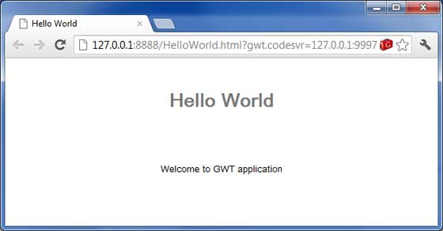
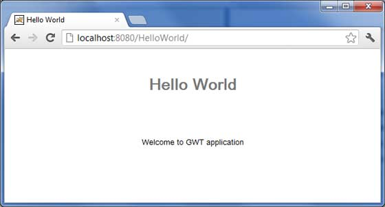

GWT - Deploy Application
This tutorial will explain you how to create an application war file and how to deploy that in Apache Tomcat Websever root. If you understood this simple example then you will also be able to deploy a complex GWT application following the same steps.
Let us have working Eclipse IDE along with GWT plug in place and follow the following steps to create a GWT application:
| Step | Description |
|---|---|
| 1 | Create a project with a name HelloWorld under a package com.tutorialspoint as explained in the GWT - Create Application chapter. |
| 2 | Modify HelloWorld.gwt.xml, HelloWorld.css, HelloWorld.html and HelloWorld.java as explained below. Keep rest of the files unchanged. |
| 3 | Compile and run the application to make sure business logic is working as per the requirements. |
| 4 | Finally, zip the content of the war folder of the application in the form of war file and deploy it in Apache Tomcat Webserver. |
| 5 | Launch your web application using appropriate URL as explained below in the last step. |
Following is the content of the modified module descriptor src/com.tutorialspoint/HelloWorld.gwt.xml.
<?xml version="1.0" encoding="UTF-8"?> <module rename-to='helloworld'> <!-- Inherit the core Web Toolkit stuff. --> <inherits name='com.google.gwt.user.User'/> <!-- Inherit the default GWT style sheet. --> <inherits name='com.google.gwt.user.theme.clean.Clean'/> <!-- Specify the app entry point class. --> <entry-point class='com.tutorialspoint.client.HelloWorld'/> <!-- Specify the paths for translatable code --> <source path='client'/> <source path='shared'/> </module>
Following is the content of the modified Style Sheet file war/HelloWorld.css.
body {
text-align: center;
font-family: verdana, sans-serif;
}
h1 {
font-size: 2em;
font-weight: bold;
color: #777777;
margin: 40px 0px 70px;
text-align: center;
}
Following is the content of the modified HTML host file war/HelloWorld.html.
<html> <head> <title>Hello World</title> <link rel="stylesheet" href="HelloWorld.css"/> <script language="javascript" src="helloworld/helloworld.nocache.js"> </script> </head> <body> <h1>Hello World</h1> <div id="gwtContainer"></div> </body> </html>
I modified HTML a little bit from previous example. Here I created a placeholder <div>...</div> where we will insert some content using our entry point java class. So let us have following content of Java file src/com.tutorialspoint/HelloWorld.java.
package com.tutorialspoint.client;
import com.google.gwt.core.client.EntryPoint;
import com.google.gwt.user.client.ui.HTML;
import com.google.gwt.user.client.ui.RootPanel;
public class HelloWorld implements EntryPoint {
public void onModuleLoad() {
HTML html = new HTML("<p>Welcome to GWT application</p>");
RootPanel.get("gwtContainer").add(html);
}
}
Here we created on basic widgest HTML and added it inside the div tag having id="gwtContainer". We will study different GWT widgets in coming chapters.
Once you are ready with all the changes done, let us compile and run the application in development mode as we did in GWT - Create Application chapter. If everything is fine with your application, this will produce following result:
Create WAR File
Now our applictaion is working fine and we are ready to export it as a war file. Follow the following steps:
Go into your project's war directory C:\workspace\HelloWorld\war
Select all the files & folders available inside war directory.
Zip all the selected files & folders in a file called HelloWorld.zip.
Rename HelloWorld.zip to HelloWorld.war.
Deploy WAR file
Stop the tomcat server.
Copy the HelloWorld.war file to tomcat installation directory > webapps folder.
Start the tomcat server.
Look inside webapps directory, there should be a folder helloworld got created.
Now HelloWorld.war is successfully deployed in Tomcat Webserver root.
Run Application
Enter a url in web browser: http://localhost:8080/HelloWorld to launch the application
Server name (localhost) and port (8080) may vary as per your tomcat configuration.
